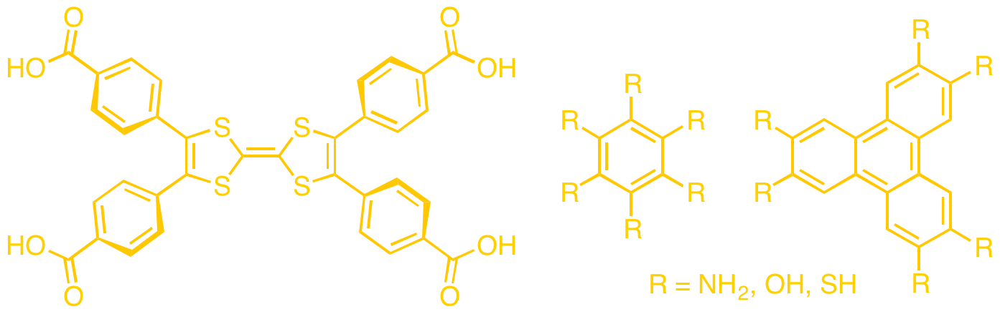
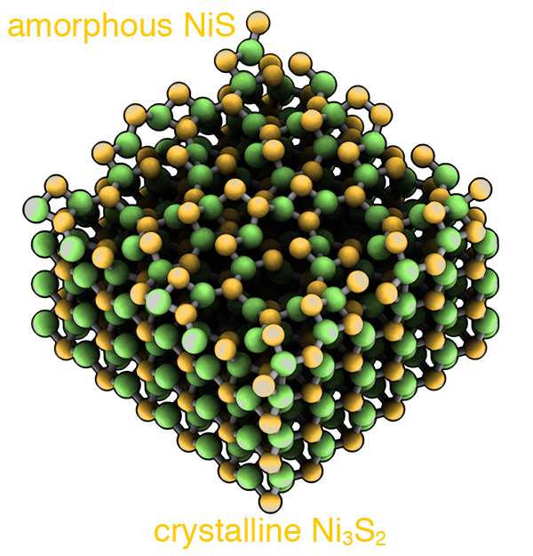
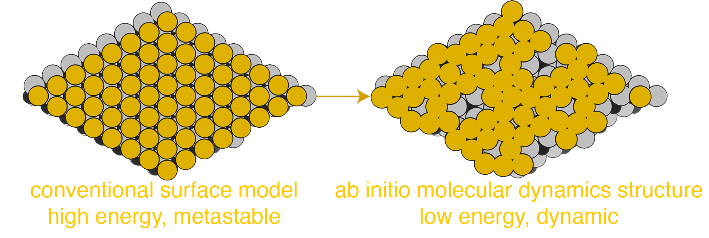

The HMS group has diverse chemical interests ranging from electronic structure
of solid-state and non-equilibrium materials to catalysis. We don't 'touch chemicals' in this lab (besides coffee and water), all our work is performed on super computers.
We are fortunate to have support from the NSF and the University of Oregon, providing access to state-of-the-art computational
facilities. Our primary goal is to perform valuable computational experiments that compliment and guide experimental studies
by providing atomic resolution of properties that are beyond the reach of conventional experimental chemistry.
Chemistry of metal-organic frameworks
Metal-organic frameworks (MOFs) are a class of solid-state porous materials composed of inorganic clusters spatially supported by organic ligands.
Their porosity gives rise to extremely high surface area.
Furthermore the combination of compositional and topological diversity enables unprecedented access to physical properties only arising from the unique MOF composition-function relationship.
As a result these hybrid materials have garnered increased interest over the past two decades dueto their potential applications in gas storage and separation, catalysis, sensors, and as battery materials.
The realization of electrically conductive MOFs would make them attractive targets for implementation in sensors, as capacitor matrices, and as electrocatalysts.
Yet, despite the potential for compositional diversity only a subset of ligands and metals yield electrically conductive MOFs, some representative ligands are shown.

Similar increases in conductivity have also been noted for MOFs constructed with Fe
2+. In all cases, the ligand and/or metal feature accessible redox states. Perhaps this is critical in the design of electrically conductive MOFs?
One objective of the HMS group is to use electronic structure calculations to determine design principles that underpin the development of future electrically conductive MOFs.
We are also interested in how MOFs can be harnessed as spatially separated single-site catalysts, either in thermal– or photocatalysis.
In this case we require localized electronic states as catalytically active sites, as opposite to a delocalized electronic structure required for electrically conductive MOFs.
A recent overview of MOF chemistry:
ACS. Cent. Sci., 2017
Harnessing Ti-localized conduction band minima for Ti
3+-catalyzed reactions:
Sci. Rep., 2016
Amorphous materials
Electronic and physical properties of liquid- and solid-state materials with no crystallographic order are of interest due to their cheap processing, overcoming the requirement for crystallization.
The challenge is rather to discover amorphous materials that feature similar chemical properties to their parent crystalline structures.
One successful example is SiO
2: both quartz and amorphous silicates (i.e. glass) are transparent and insulating.
Experimentally, the characterization of non-crystalline solids is extremely complex, because conventional X-ray techniques are not applicable.
Quantum chemistry compliments experiment to provide insights into chemical and physical properties that may persist or emerge upon amorphization.
We are interested in the prediction of chemical properties arising from diminishing symmetry and increased disorder in solid-state and glassy materials.

Emergence of new reactivity in amorphous NiS electrocatalysis:
Joule, 2017
Electrical conductivity in amorphous SnO
2:
Chem. Mater., 2016
Surface structures and properties
All materials have surfaces, if we define the surface as the boundary between two materials (we liberally include the vacuum as a 'material', too!).
It is the chemistry at the interfaces that determines the materials' catalytic activity.
Unlike thet static description of a surface recovered from cleaving crystallographic planes, a more realistic description allows for dynamic restructuring.
Yet, conventional DFT is often applied to the static picture, and hence there arrises a disparity between our models and reality.

TiWC coated in Pt is an example where conventional static models fail to describe the surface:
J. Phys. Chem. Lett., 2017
We are able to recover more representative surface descriptions using ab initio molecular dynamics, an approach which uses DFT and kinetic energy to allow atoms to move, making and breaking bonds dynamically.
The HMS group is interested in the discovery of non-equilibrium surface structure and its impact on the chemical properties arising at the interface.
The same approach can be applied to examine lattice dynamics of crystalline materials, too.